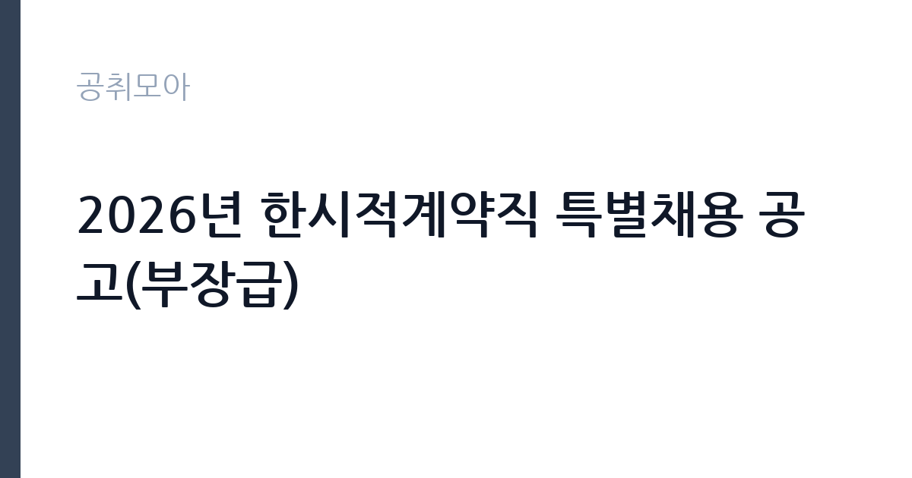

[공공기관] 2026년 한시적계약직 특별채용 공고(부장급)
대한석탄공사 · 전국 · 마감 2026-11-17 (D-14) · 출처 나라일터

한눈에 보는 모집 조건
| 기관 | 대한석탄공사 |
|---|---|
| 공고명 | 2026년 한시적계약직 특별채용 공고(부장급) |
| 고용형태 | 기간제 |
| 근무지 | 전국 |
| 게시일 | 2026-11-03 |
| 마감일 | 2026-11-17 (D-14) |
지원자격, 이렇게 읽으세요
- 부장급 1명
- 접수 ~2026-11-17 마감
- 세부 조건은 원문 공고문 확인
기간제 근로자는 근로계약 기간이 정해진 신분입니다. 계약 기간과 갱신 가능 여부가 근로계약서에 명시되며 기간 만료 시 근로관계가 종료됩니다. 결원 보충이나 특정 사업 기간에 맞춰 채용되는 경우가 많아 업무 범위가 명확합니다. 이번 공고는 대한석탄공사가 직접 진행하는 자체 전형입니다. 부장급 법무는 임용 예정 직무의 관련 경력자를 대상으로 하므로 실무 경력 연수가 핵심 요건입니다. 변호사 자격이나 법학 전공 배경이 있으면 유리하고, 공공기관 법무·계약 업무 경험은 직무 연관성이 높습니다. 공사 인사규정상 결격사유가 없어야 하고, 남자는 병역 요건을 충족해야 합니다. 한시적계약직으로 채용되므로 계약 기간과 직급별 처우를 원문에서 확인해야 합니다. 제출서류는 공고문에 적힌 순서대로 정리하면 담당자가 확인하기 쉽습니다. 자격증은 유효 기간과 등록 상태를 확인해야 합니다. 갱신이 필요한 자격이라면 갱신 여부를 먼저 점검하십시오.
이 공고의 포인트
이 공고의 첫 번째 포인트는 고용 형태입니다. 계약 기간이 정해져 있어 근무 종료 시점이 명확합니다. 그만큼 짧은 기간에 어떤 실적을 남길지가 중요해집니다. 두 번째는 업무 범위가 명확하다는 점입니다. 법무(부장급) 직무로 채용되므로 배치 이후 담당 업무가 크게 흔들리지 않습니다. 세 번째는 근무지입니다. 전국 단위 채용이라 희망 근무지와 실제 배치 지역을 함께 확인해야 합니다. 자격 요건이 까다롭지 않은 대신 지원자가 몰리는 유형의 공고입니다. 같은 직무로 함께 올라온 공고 7건 가운데 마감이 중간에 위치하므로 다른 공고와 일정이 겹치는지 확인하십시오. 다만 선발 인원이 1명으로 많지 않아 자격을 갖춘 지원자가 몰리면 경쟁률이 높아질 수 있습니다.
전형은 어떻게 진행되나
전형은 서류심사와 면접심사를 기본으로 하고 직무에 따라 필기나 실기, 체력검정이 추가됩니다. 서류 단계에서는 응시자격 충족 여부와 제출서류 형식을 확인하며 이 단계에서 탈락하는 지원자가 적지 않습니다. 면접은 직무 이해도와 경험을 확인하는 방식으로 진행되고 발표는 개별 통보나 홈페이지 게시로 이뤄집니다. 최종합격 이후에는 결격사유 조회와 채용 신체검사가 이어지며 이 절차에서 문제가 확인되면 합격이 취소될 수 있습니다. 구체적인 전형 단계와 배점은 공고문에 표로 정리되어 있으니 원문을 기준으로 준비하십시오. 경력 증명서에 직무 내용이 적혀 있지 않으면 인정받지 못할 수 있으므로 상세 기재를 요청하십시오.
원문에서 확인한 전형 방식
○ 모집분야 : 법무(부장급) ○ 선발직급 : 계약직 ○ 고용형태 : 기간제 ○ 자격요건 : 임용 예정 직무 관련 경력자 ○ 접수기간 : 2026년11월3일 ~ 2026년11월17일 ○ 응시방법 : 온라인 지원페이지를 통한 접수(www.kocoal.or.kr) ○ 문의처 : 033-749-0653
이런 분께 추천해요
- 법무·계약 분야 실무 경력이 충분한 분
- 소송과 규정 해석을 직접 수행한 경험이 있는 분
- 조직을 이끌며 검토 결과를 관리할 수 있는 분
지원 전 체크리스트
- 응시자격 요건과 경력 기준을 충족하는가 — 경력은 증명서로 입증해야 합니다
- 계약 기간과 근무 시작일·종료일을 확인했는가
- 제출서류 목록을 모두 준비했는가 — 누락 시 서류 단계에서 탈락합니다
- 접수 마감 2026-11-17 이전에 접수 방식을 확인해 제출했는가
모집 일정과 제출 타이밍
2026-11-03에 공고가 올라왔고 접수는 2026-11-17까지입니다. 남은 기간은 14일이며, 이 기간에 자격증 사본과 경력증명서, 주민등록등본 같은 기본 서류를 모두 준비해야 합니다. 경력증명서는 발급에 며칠이 걸리는 경우가 있으니 가장 먼저 신청하십시오. 접수는 온라인과 우편·방문으로 나뉘는 경우가 많고, 우편 접수는 도착 기준으로 판정되므로 마감일 소인만 믿으면 안 됩니다. 면접 일정은 서류 발표 후 개별 통보되므로 제출 후에도 연락을 받을 수 있도록 유지해야 합니다. 임용 예정일이 빠르게 잡히는 공고이므로 현재 일정과 겹치지 않는지 미리 확인하십시오.
직무 이해하기: 공공기관
대한석탄공사 부장급 법무 직무는 공사의 소송과 계약, 규정 해석을 총괄하는 자리입니다. 진행 중인 소송 사건의 대응 방향을 정하고 외부 대리인과 협의하며, 준비서면과 의견서를 검토합니다. 공사가 체결하는 계약의 법적 검토와 분쟁 예방 자문, 내부 규정 정비도 업무에 포함됩니다. 폐광지역 지원 사업과 광해 관련 인허가 쟁점을 다루는 경우가 있어 행정법 이해가 필요합니다. 부서를 이끌며 후배 직원의 검토 결과를 확인하는 역할도 맡습니다. 업무 매뉴얼과 지침이 문서로 정리되어 있어 절차를 익히면 반복 업무는 빠르게 손에 붙습니다.
자기소개서 작성 팁
지원서는 법무 경력을 사건과 계약 단위로 정리하는 것이 핵심입니다. 수행한 소송 사건의 유형과 결과, 검토한 계약의 규모와 쟁점, 규정 정비 실적을 구체적으로 쓰십시오. 부장급 자리이므로 조직 관리와 후배 육성 경험을 함께 제시해야 합니다. 공사가 수행하는 폐광지역 지원과 광해 업무의 법적 쟁점을 이해하고 있다는 점을 한 문단 더하면 차별화됩니다. 직무 경험이 많지 않다면 경험의 양보다 과정을 구체적으로 쓰는 편이 낫습니다. 어떤 상황에서 무엇을 판단했고 어떤 결과가 나왔는지 순서대로 서술하면 신뢰가 생깁니다. 지원 동기와 기여 방안은 한 문단씩 짧게 유지하고, 가장 자신 있는 경험에 분량을 몰아주십시오. 마지막 문장은 포부보다 구체적인 실행 계획으로 끝내는 것이 좋습니다.
면접 준비 포인트
면접에서는 사건 대응 판단과 조직 관리 경험을 확인합니다. 패소 가능성이 있는 사건에서 합의와 소송 중 무엇을 택할지 판단한 경험, 계약 조항 해석이 갈릴 때 정리한 방식이 질문 대상입니다. 부서를 이끌며 후배의 검토를 어떻게 검증했는지도 묻습니다. 공사의 공적 기능과 최근 현안을 미리 확인해 가면 답변이 구체적으로 나옵니다. 마지막 질문 시간에는 근무 조건에 대한 확인 사항을 한 가지 정도 준비해 가면 성실성이 드러납니다.
급여·근무조건 읽는 법
부장급 한시적계약직 보수는 공사의 직급별 계약직 임금 기준과 경력 인정 결과에 따라 정해집니다. 직급이 높은 자리인 만큼 경력 환산 방식이 총액을 크게 좌우하므로, 경력 증명서에 직무와 기간이 구체적으로 기재되도록 준비하십시오. 계약 기간이 정해져 있어 월 보수와 근무 개월 수를 곱한 총액으로 비교해야 합니다. 구체적인 금액과 수당 항목은 공고문 처우 부분에서 확인하십시오. 2026년 적용 최저임금은 시급 10,320원, 월 환산 2,156,880원(주 40시간·209시간 기준)입니다. 고용노동부 고시 제2025-47호로 확정된 금액입니다. 공고문에 금액이 제시되지 않은 항목은 원문 보수표나 처우 설명에서 확인해야 하며 확인되지 않은 수치는 쓰지 않는 것이 원칙입니다. 비교할 때는 월 급여뿐 아니라 상여·명절휴가비·복지포인트·초과근무수당까지 포함한 연간 총액으로 계산하십시오. 기간제라면 계약 기간 동안의 총액을, 무기계약이라면 호봉 상승과 정년까지의 누적 소득을 기준으로 판단하는 편이 정확합니다.
자주 묻는 질문
- 선발 인원은 몇 명인가요?
공고문 기준 1명입니다. 직종별로 인원이 나뉘는 경우가 있으니 모집분야 항목을 함께 확인하십시오. - 근무지는 어디인가요?
전국 지역의 대한석탄공사 소속 근무지입니다. 세부 주소와 출퇴근 조건은 원문 공고문에서 확인할 수 있습니다. - 보수는 얼마인가요?
채용 신분(기간제)과 기관 임금 규정에 따라 정해지며 구체적인 금액은 공고문 처우 항목에 제시됩니다. 금액이 공개되지 않은 경우에는 원문의 보수표를 확인하십시오.
함께 보면 좋은 공고
[공공기관] 한전KDN(주) 경남사업처 배전자동화 성능관리분야 비정규직 모집공고 — 마감 2026-11-18[공공기관] 한국폴리텍대학 남대구캠퍼스 업무직(대학운영직_조리사) 채용(2차) 공고 — 마감 2026-11-11[공공기관] 한국폴리텍대학 남대구캠퍼스 행정지원직원(휴직대체_학사지원직) 채용 공고 — 마감 2026-11-11출처: 나라일터 공개정보를 바탕으로 공취모아가 정리한 안내글입니다. 모집 조건·일정은 변경될 수 있으니 지원 전 반드시 원문 공고문을 확인하세요. 본 글은 정보 제공용이며 합격을 보장하지 않습니다.